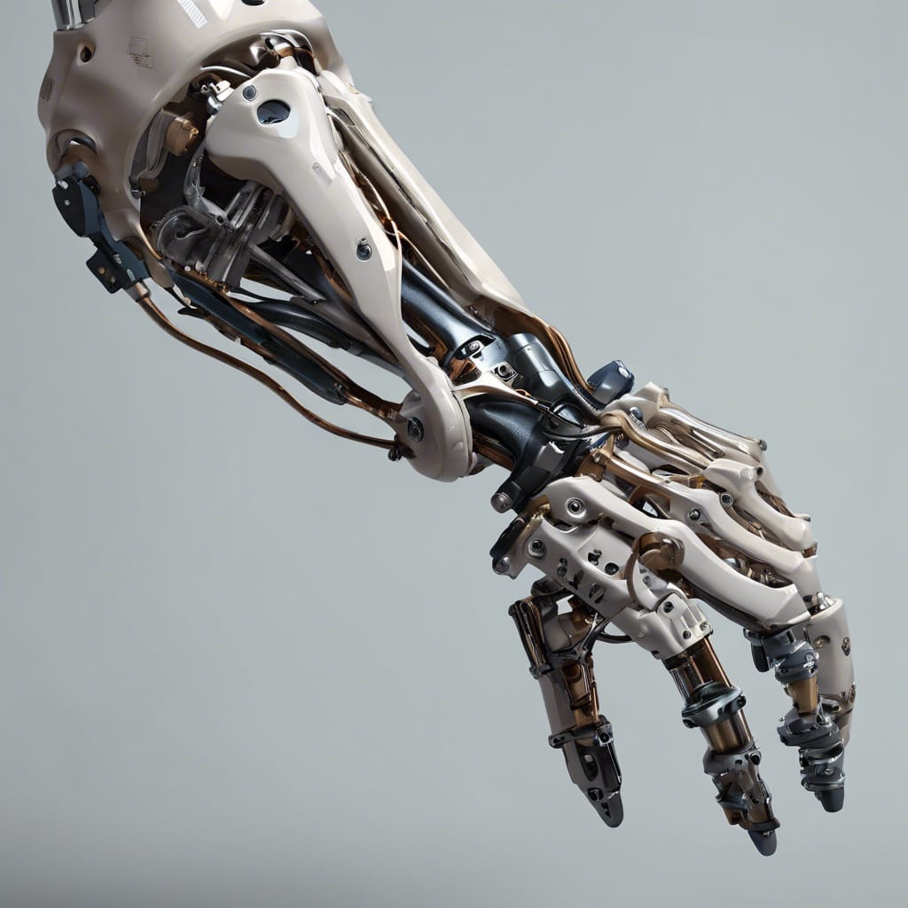

BioArm es una empresa de fabricacion de prótesis en extremidades del cuerpo a un precio accesible, con una calidad

buena y un producto duradero para el público en general.
BioArm busca mejorar la calidad de vida de las personas a través del diseño,
desarrollo y fabricación de prótesis de brazo innovadoras, accesibles de precio y de alta calidad.
Devolviendo la moviliad e independencia a nuestros clientes, creando prótesis que se adapten a sus necesidades y estilos de vida.
MISION
- Nuestra misión es algo sencillo, para nosotros lo más importante es mejorar la calidad de vida de nuestros pacientes, proporcionándole soluciones protesticas innovadoras y personalizadas que les permitan regresar a su independencia y autonomía, así como intentar que recuperen la seguridad y confianza en ellos mismos
VISION
- Nuestra visión principalmente se centra tanto en el paciente como en la tecnología.
Nos interesa ser líderes en la funcionalidad como en la calidad de nuestro producto en el cual siempre trataremos de implementar la mejor tecnología posible
Nosotros buscamos dar innovación en prótesis de brazo con:
- Productos que restauren la movilidad
- Productos esteticos
- Dar mas confianza a clientes
- Ofrecer precios diversos y accesibles